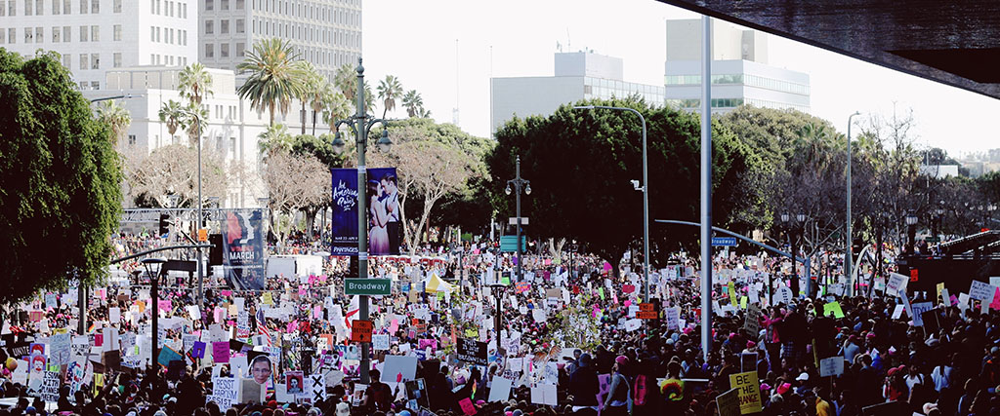
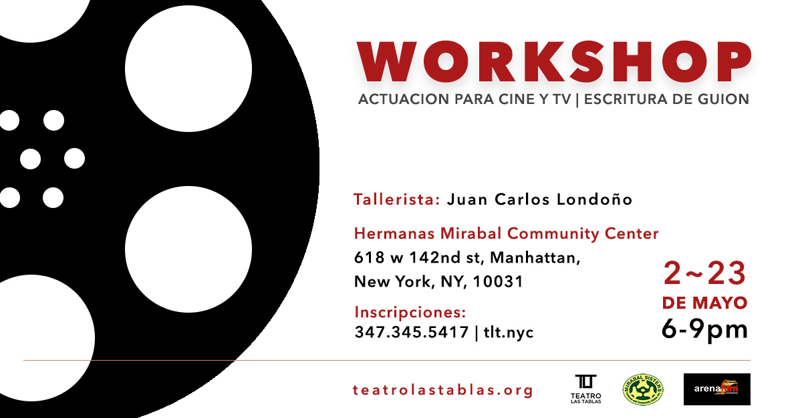

bringing the joy of theaters
bringing the joy of theaters
to communities
who we are
Teatro las Tablas is a non for profit corporation that works with individuals artists, artists groups, individual residents and group of residents in the Washington Inwood area of Manhattan as well as with other interested individuals and communities to organize and help create theatrical plays and performances.
We look forward to work creating a more humane world, a united community and a larger art scene.
what's going on
Workshop

2 - 30 Mayo, 6-9pm
Desde el 2 de mayo se estará impartiendo un workshop de actuación y escritura de guiones para cine y tv. El mismo estará a cargo del Tallerista: Juan Carlos LondoñoFecha: Desde el 2 al 30 de Mayo, 6-9pm Lugar: Hermanas Mirabal Community Center Incripciones: 347.345.5417